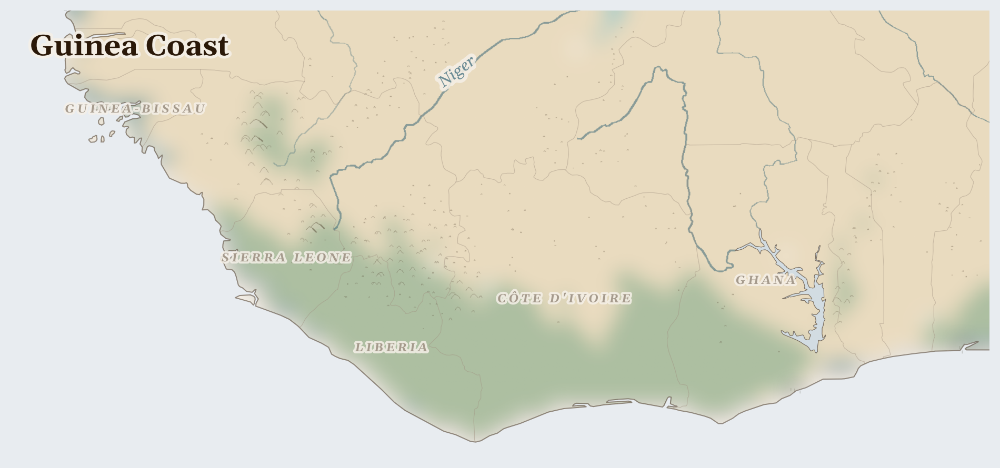

Guinea Coast
Guinea, Côte d'Ivoire, Liberia and 9 more countries
Afrotropic
This is the green coast of West Africa, where the forest meets the sea. Fishing canoes with painted names ride the waves, markets are full of colour and music, and inland grow small trees whose seeds the whole world craves — cocoa.
How Life Works Here
About two million families here grow the cocoa that becomes most of the world's chocolate. The pods grow straight out of the tree trunk, like ornaments. Fishers bring in sardines and tuna, and in some places people dig for gold.
Smallholder cocoa farmers (~2M households across Ghana and Côte d'Ivoire), Women providing 68% of cocoa labour but owning <25% of land, Child labourers (est).
small mines (galamsey).
Artisanal fishers (~200K in Senegal, Fante/Ewe in Ghana), Women fish processors (smoking, drying, fermenting), Inland consumers in Mali, Burkina Faso (landlocked protein supply).
What Is Happening
Here is the unfair part: the families who grow the cocoa earn only a tiny piece of what chocolate sells for, and many have never even tasted a chocolate bar. Some children work on the farms when they should be in school. And the gold digging is poisoning some rivers. But people are pushing back: farmer groups are teaming up to demand fairer prices, and communities are working to get every child a desk in a classroom.
Something Wonderful
Chocolate starts as a white, sweet pulp around purple seeds inside a pod the size of a small rugby ball — growing straight out of a tree trunk! The seeds must ferment under banana leaves, dry in the sun, and cross an ocean before they become the bar in your shop.
Let's Do Something Together
Where Does Our Food Come From?
Look at something you ate today. Where did it grow? If you have a map, try to find the country. Food travels a very long way to reach our plates! In some places, families grow their own food, but when the rains do not come, the crops cannot grow.
- food packaging with country of origin
- world map or globe
For grown-ups
Global supply chains connect consumer choices to land use in crisis regions. Cash crop exports (coffee, cocoa, palm oil) often displace subsistence farming, making communities dependent on volatile markets.
Let Us Pray Together
God, bless the farmers who grow our food. Help families whose crops did not grow.
Leader: We pray for those who are hungry. For the millions across Guinea Coast who cannot meet their daily food needs.
All: Lord, hear our prayer.
Leader: We pray for the displaced. For the tens of thousands driven from their homes.
All: Lord, hear our prayer.
Leader: We pray for those living under violence. For communities enduring fighting across Guinea Coast, ..
All: Lord, hear our prayer.
Leader: We pray for Côte d'Ivoire. Especially for Côte d'Ivoire, facing the most severe convergence of crises in this region.
All: Lord, hear our prayer.
O give thanks to the Lord, for he is gracious, for his steadfast love endures for ever. Let the redeemed of the Lord say this, those he redeemed from the hand of the enemy,
Collect
Almighty God, who called your Church to bear witness that you were in Christ reconciling the world to yourself: help us to proclaim the good news of your love, that all who hear it may be drawn to you; through him who was lifted up on the cross, and reigns with you in the unity of the Holy Spirit, one God, now and for ever.
Amen.
Talk About It
If the child who grew your chocolate's cocoa stood next to you at the counter, how would you want to share the bar?
One Thing We Can Do
Next time chocolate comes your way, turn the wrapper over. If you see "Ghana" or "Côte d'Ivoire" — or a fair-trade mark — you know whose hands picked the pods. Say thank you to God for them, by name: the cocoa farmers.